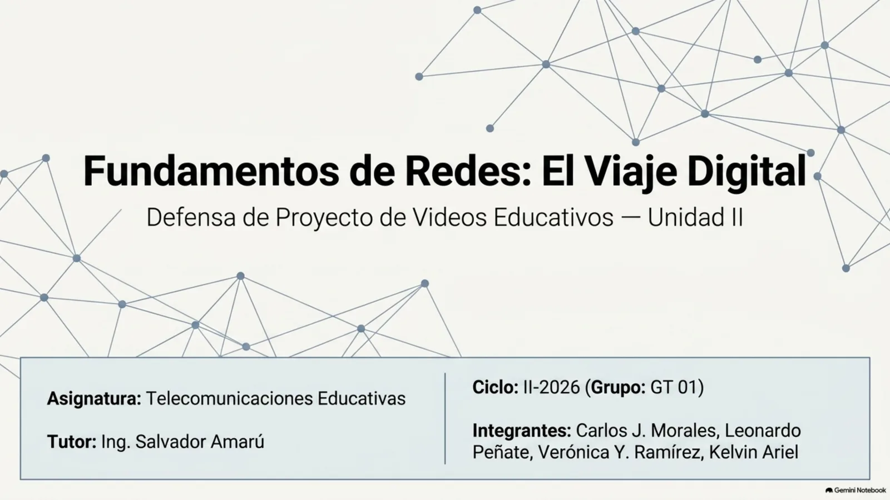

Unidad 02 · El viaje digital
Redes informáticas
Fundamentos para comprender cómo se conectan los dispositivos y circulan los datos.
Propósito
Objetivo de la unidad
Recurso principal
Video educativo
Si el reproductor solicita acceso, abre el video directamente en Google Drive.
Síntesis
Resumen del contenido
Una red informática conecta dispositivos para intercambiar información, compartir recursos y acceder a servicios. Su funcionamiento depende de elementos físicos, como computadoras, routers, switches, cableado y medios inalámbricos, así como de reglas lógicas que organizan la comunicación.
La unidad presenta los tipos de redes, los dispositivos principales, las formas de conexión y el papel de los protocolos. También retoma los modelos OSI y TCP/IP para explicar cómo los datos se dividen, se identifican, recorren distintos caminos y se reconstruyen al llegar. Así, la conectividad deja de verse como un proceso invisible y se comprende como una coordinación entre equipos, medios y estándares.
Materiales
Productos y documentos relacionados
Seguimiento
Evidencias de publicación e interacción
Transparencia
Herramientas digitales e IA
El producto integró investigación, escritura compartida, preparación de diapositivas, grabación y edición audiovisual. Cualquier apoyo de IA se empleó para facilitar la organización o la elaboración de recursos; la selección final, la revisión conceptual y la responsabilidad académica corresponden al equipo.